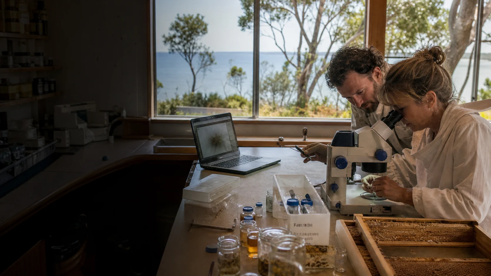

Sample receiving bench
Sealed sample boxes, labels, chain-of-custody sheets, freezer, disinfectant station and a clear intake routine.

A serious Straddie bee lab does not need to pretend it owns every machine on day one. The core work can happen on the island, while specialist chemistry, viral diagnostics or molecular confirmation can be supported by university partners.
Two-site model
The source material points to UQ Moreton Bay Research Station as the obvious island base for lab and training work. A separate community apiary or field node would keep practical beekeeper learning visible and locally agreed.
That split matters. The lab can handle samples, microscopes, data and training. The field node can test monitoring routines, trap designs, hygiene, brood-break methods and legal treatment checks under proper guidance.
Lab zones
These are not luxury ideas. They are simple places where samples, people and questions stop getting mixed up.
Sealed sample boxes, labels, chain-of-custody sheets, freezer, disinfectant station and a clear intake routine.
Stereomicroscopes, a compound microscope, camera mount and reference sheets for mites, beetles, larvae and brood symptoms.
Bee cages, incubator, humidity control, scales, microplates and timers for testing ideas before hive trials.
Controlled work on beetle behaviour, trap prototypes, pupation containers and freezer kill steps.
Workshops, dashboard review, printed protocols, map wall and a secure beekeeper data system.
Clear links to UQ, SCU, QUT, Griffith, CSIRO or other partners for the tests that need deeper equipment.
Reality check
A real lab is not defined by grand language. It is defined by samples handled well, local workshops that people attend, data that helps decisions, and partners who make beekeeper life easier.
If a suspicious sample comes in, can it be labelled, stored, photographed and referred without confusion?
Does a workshop help someone monitor better, reduce beetle pressure, report correctly or check treatment effectiveness?
Can the project map pressure patterns without publishing hive locations or shaming individual losses?